We are using Weather Dataset on 2010 -2020 that are already being cleaned on previous process.See for Reference. And then we catogorized the data into 3 level of Risk: High,Medium and Low for comparison purpose, see for Reference. We do comparison between Low and High level of risk for the clarity of the differentiation.
We are removing Imperial County from the parameter because Imperial County do not have wildfire incident on the incident data, see for Reference
Analysis
1. Univariate Analysis
We are doing comparison between 2 same variables from different level of risks : Low and High
1.1. Temperature
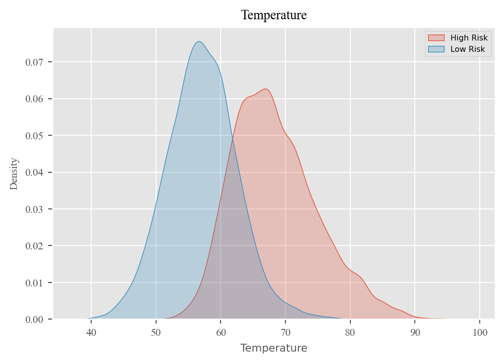
1.2. Maximum Temperature
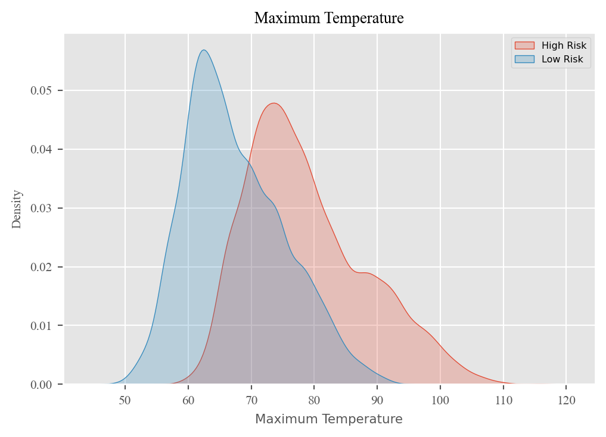
1.3. Minimum Temperature
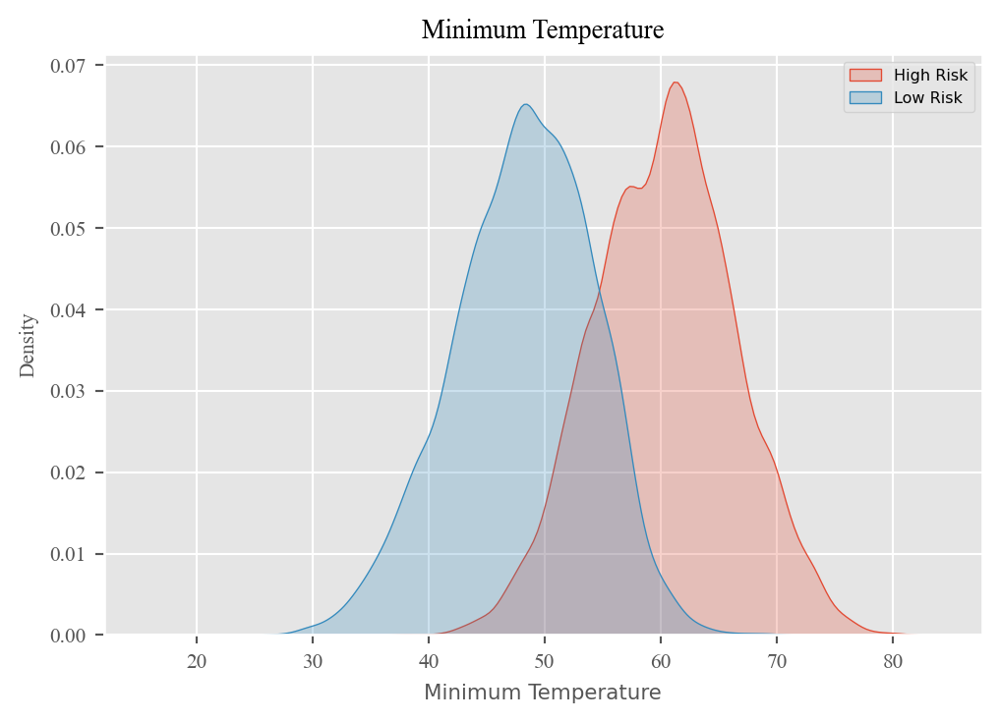
1.4. Wind Direction
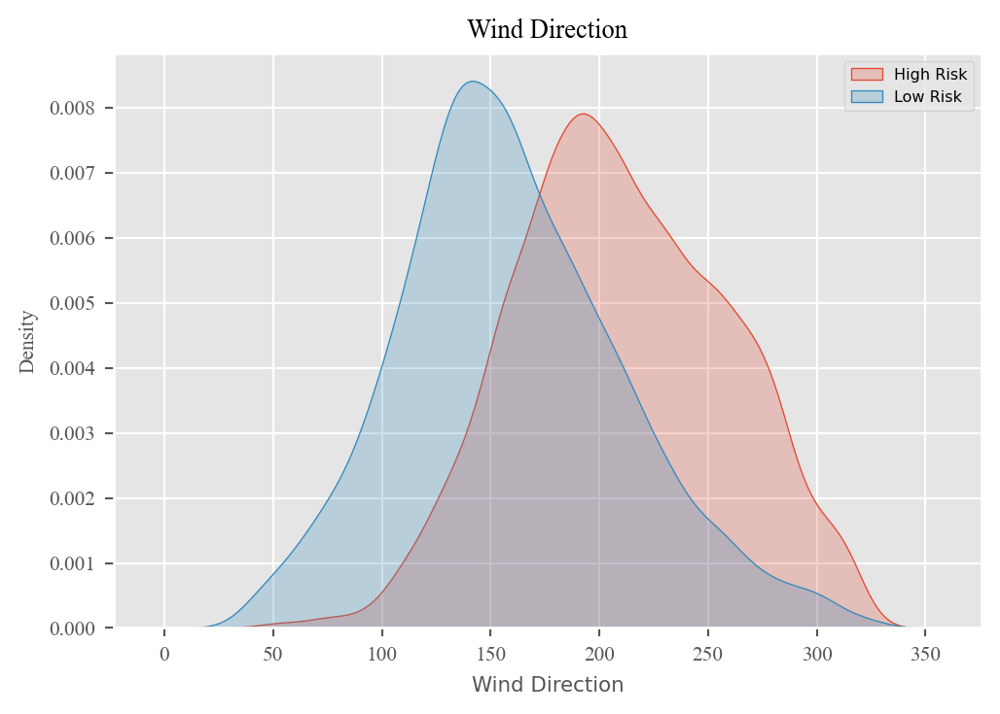
1.5. Wind Speed
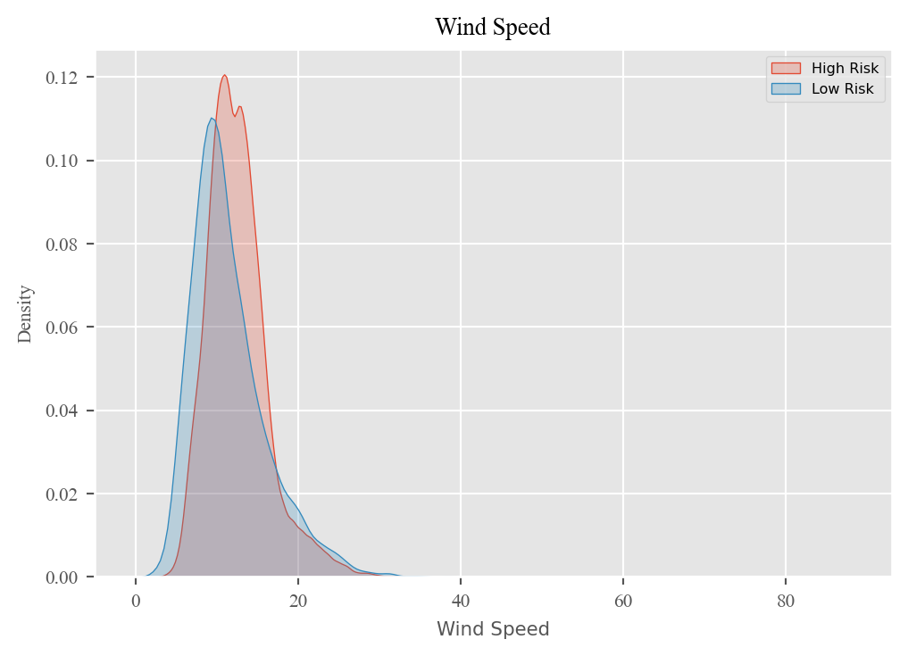
1.6. Relative Humidity
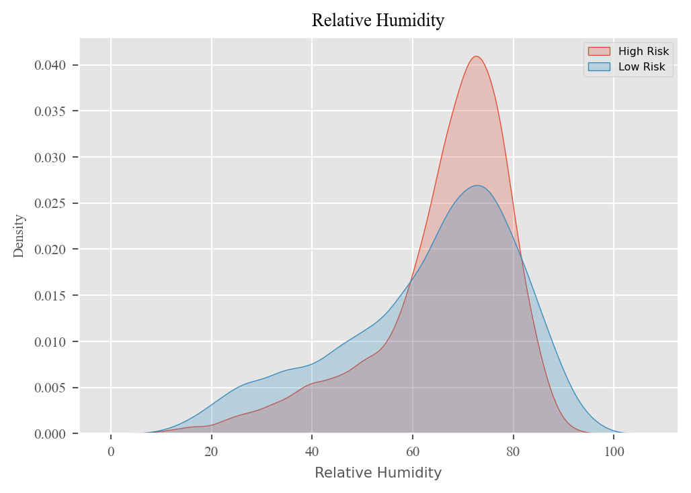
1.7. Precipitation
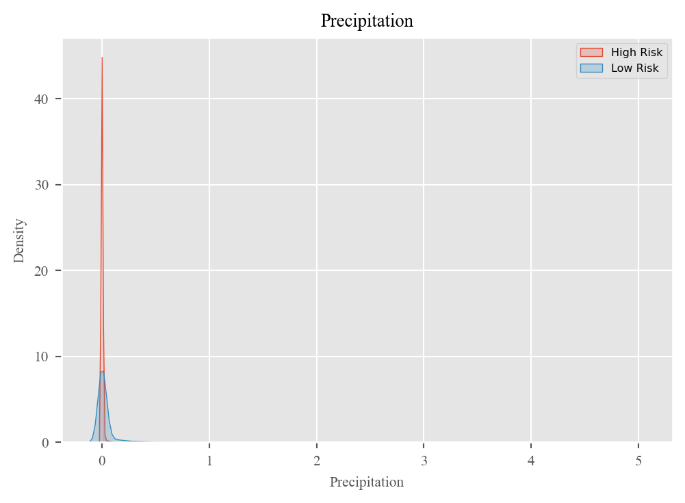
1.8. Cloud Cover
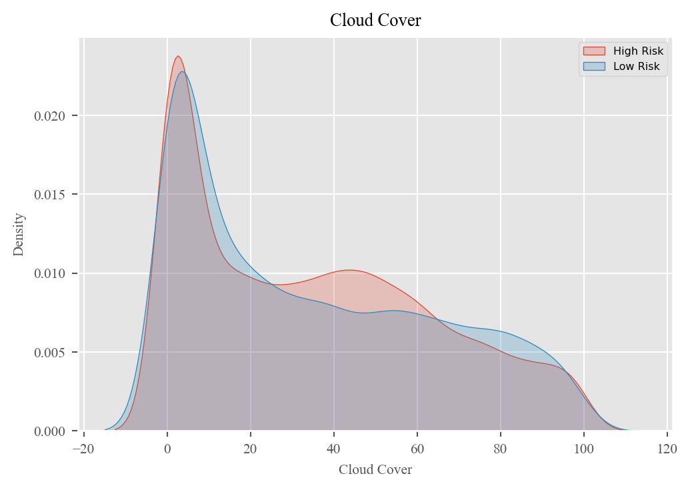
2. Bivariate Analysis
As we know that Temperature had a big impact for wildfire to occured, we are trying to see the correlation between Temperature and other variables from a different level of risks.
2.3. Temperature vs Wind Speed
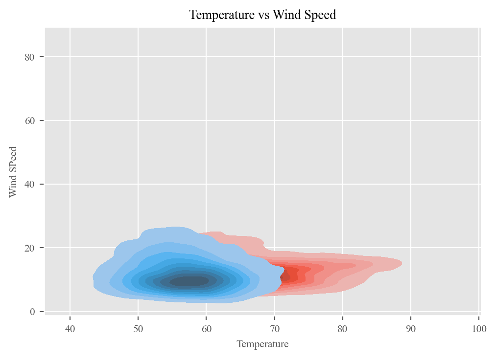
2.3. Temperature vs Wind Direction
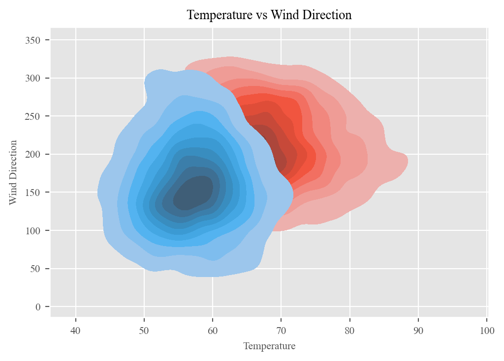
2.4. Temperature vs Relative Humidity
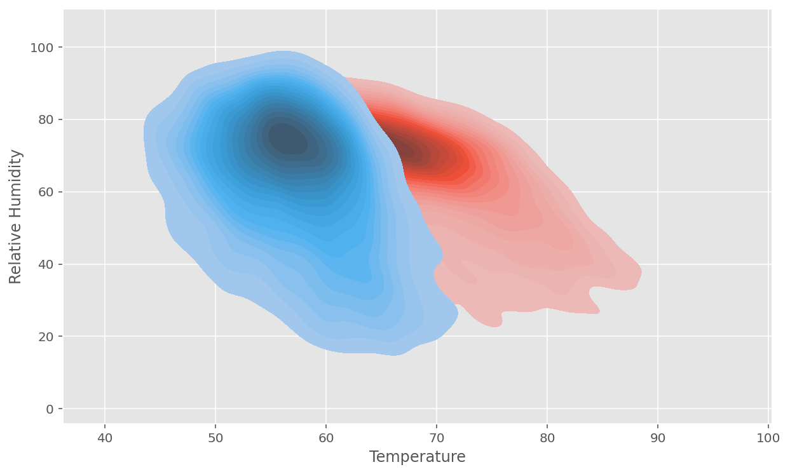